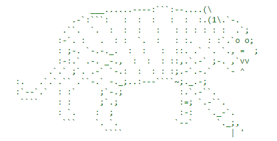

The game me and Rudy made turned out kind of buggy. Because of the amount of code the game took a while to start up. We also had a problem that the aliens would take multiple hits to die. Overall a very stressful time.
I once again worked with Rudy for this game. We did not ecounter many problems along the way. We needed to know basic python. Othe then that it was just creating a story and repetitive programming. The story itself was somewhat inspired by Lost. I personally thought it turned out well. if i were to change something I would have probably created more endings. Another really good story was "The Life of Phuc" because it was just plain funny.